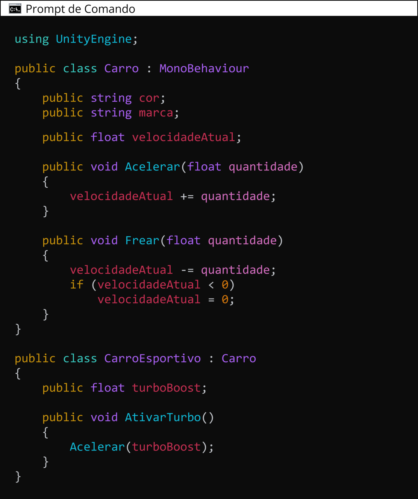

Vamos iniciar os estudos?
PlayAssista ao vídeo abaixo para uma introdução aos seus estudos
Como a Programação Orientada a Objetos é utilizada para desenvolvimento de software?
A Programação Orientada a Objetos (POO) é um paradigma de programação que utiliza "objetos" - entidades que combinam dados e funcionalidades - para criar programas mais flexíveis e intuitivos.
Este estilo de programação contrasta com a programação procedural (ou estruturada), que foca em funções e rotinas. Na POO, cada objeto é uma instância de uma "classe", que define as características e comportamentos do objeto.
A ideia central é modelar software de uma maneira que se assemelhe a objetos do mundo real, tornando o código mais compreensível e gerenciável.
O paradigma de Programação Orientada a Objetos (POO) foi criado por Ole-Johan Dahl e Kristen Nygaard no final dos anos 1960. Eles desenvolveram a linguagem de programação Simula, que é considerada a primeira linguagem de programação orientada a objetos. A Simula introduziu conceitos fundamentais da POO, como classes, objetos, herança e subtipos.
A Programação Orientada a Objetos oferece várias vantagens. Ela promove a modularidade, pois o software é dividido em pequenos objetos independentes. Isso facilita a manutenção e a atualização de sistemas, além de tornar mais simples a compreensão do código. A reutilização de código é outra vantagem significativa, permitindo que desenvolvedores economizem tempo ao usar classes e objetos já existentes.
Além disso, a POO pode melhorar a produtividade na programação e suportar o desenvolvimento de sistemas mais complexos com maior facilidade.
O vídeo a seguir traz uma introdução ao conceito de Programação Orientada a Objetos. Assista com atenção e faça anotações.
A Programação Orientada a Objetos (POO) é um paradigma de programação que utiliza "objetos" para modelar dados e comportamentos de maneira a refletir estruturas e funcionalidades do mundo real. Neste contexto, a estrutura e o comportamento de um objeto são definidos por sua "classe".
Uma classe, em POO, atua como um modelo ou um plano detalhado que especifica quais atributos (características) e métodos (ações) os objetos criados a partir dela possuirão.
Desta forma, em POO, uma classe é um modelo ou um plano que define quais atributos e Métodos um objeto do tipo definido pela classe deve ter.
Para ilustrar, considere a classe Carro. Esta classe é um modelo abstrato que define as características comuns e os comportamentos que todo objeto do tipo Carro terá.
Por exemplo, a classe Carro pode estipular que cada instância (ou objeto) de um carro terá atributos como cor, modelo, marca, e velocidade atual.
Estes atributos são variáveis dentro da classe que armazenam informações específicas - por exemplo, a cor pode ser vermelha, azul, preta, etc.
Além dos atributos, a classe Carro também define métodos. Métodos são funções associadas à classe que descrevem as ações que os objetos da classe podem executar.
No caso da classe Carro, métodos comuns podem incluir acelerar(), frear(), ligar(), entre outros. Estes métodos, quando chamados em um objeto específico do tipo Carro, executam as ações correspondentes, como acelerar ou frear o carro.
Podemos implementar uma classe Carro na Unity, seguindo os seguintes passos. Primeiro, deve-se criar um script na Unity chamado Carro. Após isso, basta abrir o script no seu editor de texto padrão e editar o código para ficar parecido com o código a seguir.
MonoBehaviour é como uma caixa de ferramentas no Unity, que te ajuda a fazer coisas legais nos seus jogos. Quando você escreve um script, ou um conjunto de instruções para o seu jogo, você geralmente usa essa caixa de ferramentas. Ela tem funções especiais que são como superpoderes, permitindo que seu script faça coisas em momentos específicos, como quando o jogo começa ou a cada momento do jogo.
Além disso, MonoBehaviour permite que você conecte seu script a um objeto no seu jogo (como um personagem ou item), para que você possa controlar o que esse objeto faz.
Um objeto é uma instância de uma classe. Ele é uma entidade que possui um estado e um comportamento. O estado é representado por atributos e o comportamento é representado por métodos. Por exemplo, um objeto Carro tem os atributos da classe que ele instância.
Uma classe, é como um projeto para a criação de objetos. Quando um objeto é criado a partir de uma classe, dizemos que ele é uma instância daquela classe.
Cada instância de uma classe pode ter valores diferentes para seus atributos, mas todos seguirão o mesmo conjunto de atributos e métodos definidos pela classe.
Na engine Unity, a criação de instâncias de uma classe é geralmente feita ao adicionar a classe como um componente a um GameObject. Aqui, para fins didáticos, vamos ver como seria uma instância da classe Carro.
No Unity, um GameObject é como um bloco de construção para o seu jogo. Sozinho, ele não faz muita coisa, é como um recipiente vazio. Mas você pode adicionar coisas a ele, como desenhos, formas ou regras, que são chamadas de componentes. Com esses componentes, seu GameObject pode se tornar qualquer coisa que você quiser, como um personagem, um item que você pode pegar, um pedaço do cenário, uma luz ou até mesmo a câmera que mostra o jogo. Então, basicamente, um GameObject é uma peça que você pode usar para construir seu mundo de jogo.
Neste exemplo, CarroCreator é um script separado que você pode anexar a qualquer outro GameObject na sua cena (por exemplo, um GameObject vazio chamado "CarroCreator").
Quando a cena começa, o script cria duas instâncias da classe Carro e define seus atributos. Ele então chama os métodos Ligar() e Acelerar() nas instâncias do carro.
Vale lembrar que esta forma de instanciar objetos não é possível no caso da nossa classe Carro, já que ela é um MonoBehaviour (ou seja, se ela estender MonoBehaviour), então você não pode criar instâncias dela usando o operador new.
Nesse caso, você teria que adicionar a classe Carro como um componente a um GameObject. Da forma que se segue:
QUESTÃO 1
Qual das seguintes afirmações é verdadeira sobre classes e objetos?
A composição é um princípio de design em POO onde uma classe é composta por outras classes, representando uma relação "tem-um". Por exemplo, uma classe Carro pode ser composta por classes Motor, Roda e Assento, pois um carro "tem um" motor, "tem uma" roda e "tem um" assento. Aqui estão alguns exemplos:
Classe Carro e Classe Motor: Um carro "tem um" motor. Portanto, a classe Carro pode ter um atributo do tipo Motor.
Classe Pessoa e Classe Endereço: Uma pessoa "tem um" endereço. Portanto, a classe Pessoa pode ter um atributo do tipo Endereco.
Classe Computador e Classe CPU: Um computador "tem uma" CPU. Portanto, a classe Computador pode ter um atributo do tipo CPU.
Nesses exemplos, a classe Carro, Pessoa e Computador são compostas por outras classes (Motor, Endereco e CPU, respectivamente). Isso permite que você crie objetos mais complexos a partir de objetos mais simples, tornando seu código mais modular e fácil de gerenciar.
A primeira linguagem de programação a implementar sistematicamente os conceitos de POO foi a SIMULA-68. Logo em seguida surgiu a linguagem Smalltalk, criada pela Xerox , que pode ser considerada a linguagem que popularizou e incentivou o uso do paradigma OO.
A herança é um princípio de POO que permite que uma classe herde atributos e métodos de outra classe. A classe que está herdando é chamada de subclasse e a classe da qual está herdando é chamada de superclasse.
A herança permite o reuso de código e a representação de relações do tipo "é-um". Vamos considerar um exemplo em que temos uma classe base Carro e queremos criar uma classe Carro Esportivo que herda de Carro.
Aqui está como podemos fazer isso na Unity:
Neste exemplo, CarroEsportivo é uma subclasse de Carro. Isso significa que CarroEsportivo herda todos os atributos e métodos de Carro. Além disso, CarroEsportivo define um atributo adicional turboBoost e um método adicional AtivarTurbo(). O método AtivarTurbo() usa o método Acelerar(), que é herdado de Carro.
Portanto, se você criar uma instância de CarroEsportivo, você poderá usar todos os métodos e atributos de Carro, bem como o método AtivarTurbo() e o atributo turboBoost específicos de CarroEsportivo.
QUESTÃO 2
Avalie se a afirmação a seguir é verdadeira ou falsa.
Em Programação Orientada a Objetos, a herança permite que uma classe herde todos os atributos e métodos de outra classe, mas a classe filha não pode ter atributos ou métodos adicionais próprios.
A hierarquia de tipos é um conceito em POO onde as classes são organizadas em uma estrutura hierárquica baseada em herança. A classe no topo da hierarquia é chamada de classe base ou superclasse, e as classes que herdam dela são chamadas de subclasses.
O polimorfismo é um princípio de POO que permite que uma classe tenha múltiplas formas. Vamos considerar um exemplo em que temos uma classe base Carro e uma classe derivada CarroEsportivo.
Aqui está como você poderia implementar polimorfismo na Unity:
Neste exemplo, CarroEsportivo é uma subclasse de Carro. O método Acelerar() na classe Carro é marcado como virtual, o que significa que ele pode ser sobrescrito por qualquer classe que herde de Carro.
Na classe CarroEsportivo, o método Acelerar() é sobrescrito para incluir o turboBoost ao acelerar. A palavra-chave base é usada para chamar a implementação do método Acelerar() na classe base Carro.
Portanto, se você chamar o método Acelerar() em uma instância de CarroEsportivo, ele usará a implementação de Acelerar() definida em CarroEsportivo, não a implementação em Carro. Isso é polimorfismo.
QUESTÃO 3
Avalie se a afirmação a seguir é verdadeira ou falsa.
Em Programação Orientada a Objetos, o polimorfismo permite que métodos com o mesmo nome tenham comportamentos diferentes dependendo da classe do objeto que os está chamando.
Encapsulamento é um dos conceitos fundamentais da programação orientada a objetos (POO) e refere-se à prática de ocultar os detalhes internos do funcionamento de um objeto e expor apenas aquelas partes que são seguras e necessárias para a interação externa.
Em outras palavras, encapsulamento é sobre manter os dados (atributos) e os métodos (comportamentos) de um objeto protegidos e ocultos do mundo exterior, permitindo acesso a eles apenas de maneira controlada.
Para implementar o encapsulamento na classe Carro no Unity, você precisa modificar a visibilidade dos atributos e controlar o acesso a eles através de métodos públicos. Vamos modificar a classe Carro para aplicar o encapsulamento:
Atributos Privados: Os atributos cor, marca, modelo e velocidadeAtual foram alterados para privados. Isso significa que eles não podem ser acessados ou modificados diretamente de fora da classe Carro.
Propriedades Públicas: Foram criadas propriedades públicas (Cor, Marca, Modelo, VelocidadeAtual) que permitem o acesso controlado aos atributos privados. Essas propriedades utilizam os métodos get e set para ler e modificar os valores dos atributos, respectivamente.
Controle de Acesso: No caso da VelocidadeAtual, o set é privado, o que significa que o valor só pode ser modificado dentro da classe Carro. Isso é útil para garantir que a velocidade não seja definida para um valor inválido (por exemplo, um valor negativo) diretamente de fora da classe.
Essas mudanças garantem que a classe Carro tenha um controle maior sobre seus dados internos e comportamentos, permitindo que a lógica interna seja protegida de modificações inesperadas ou incorretas de outras partes do código. Essa é a essência do encapsulamento em POO.
QUESTÃO 4
Avalie se a afirmação a seguir é verdadeira ou falsa.
Em Programação Orientada a Objetos, o encapsulamento é um princípio de POO que permite que uma classe herde atributos e métodos de outra classe.
A Programação Orientada a Objetos é um paradigma de programação que usa objetos e suas interações para projetar aplicações. Ela é baseada em princípios como objetos, classes, herança, encapsulamento e polimorfismo.
A herança permite o reuso de código e a representação de relações do tipo "é-um", enquanto o polimorfismo permite que uma classe tenha múltiplas formas. A composição, por outro lado, permite a criação de classes complexas através da combinação de outras classes.